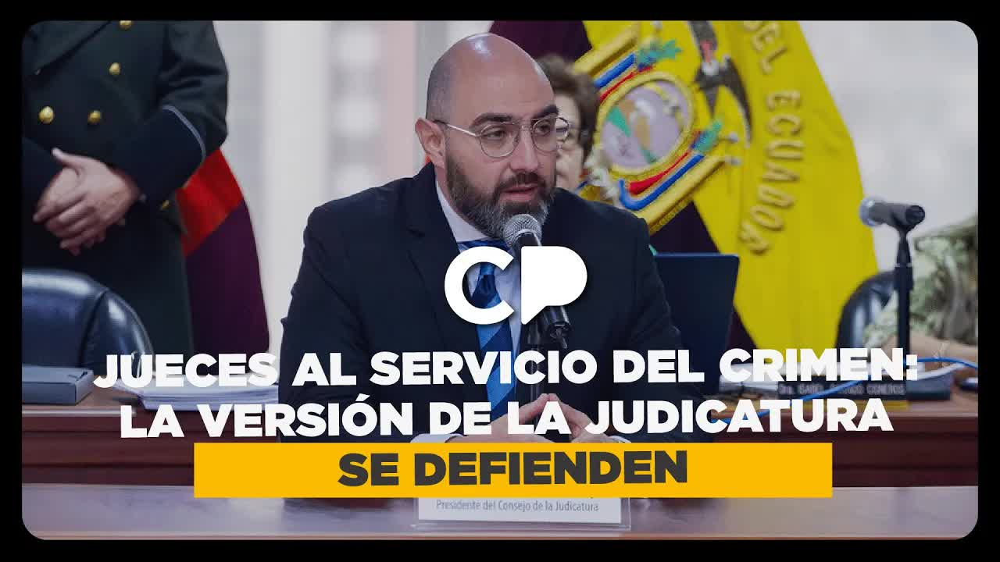
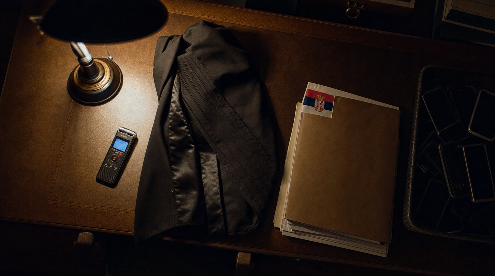
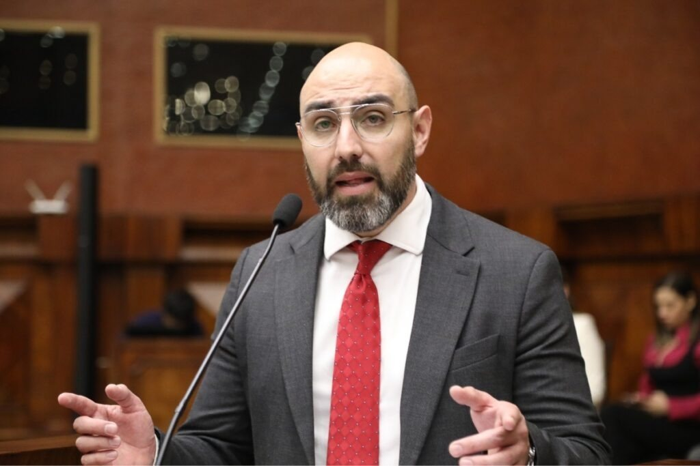
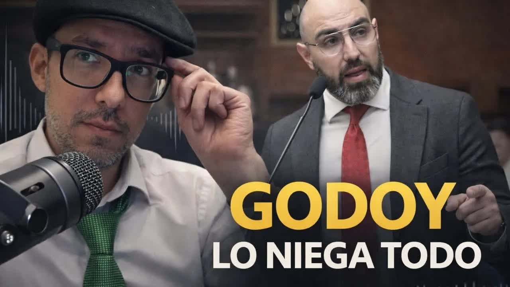
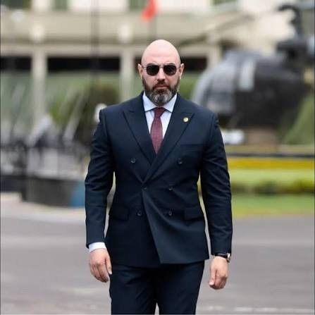
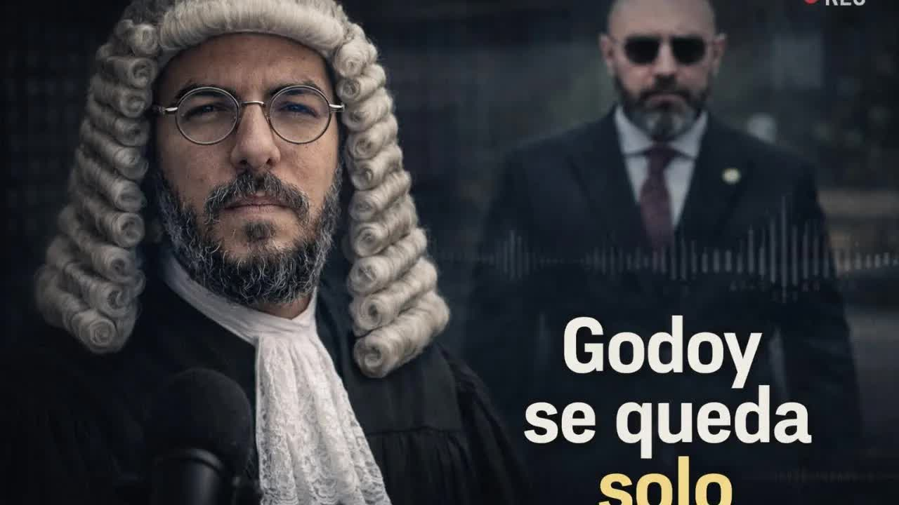
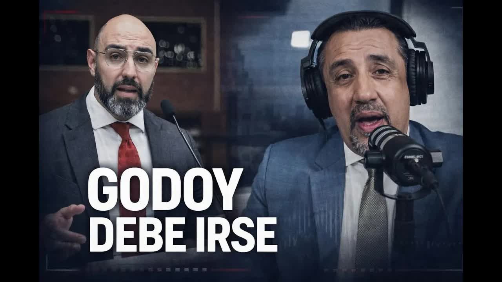
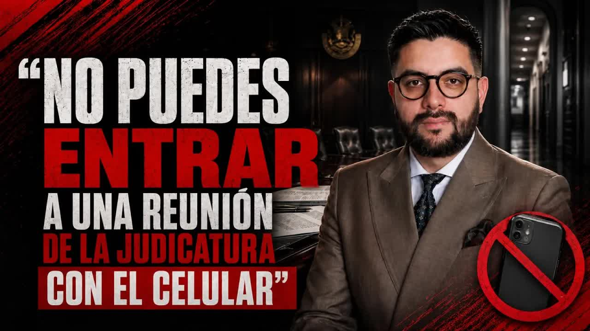

23 jun 2025 · Antecedente: Godoy en Café la Posta
El 10 de noviembre de 2025 el director provincial de Pichincha del Consejo de la Judicatura, Henry Gaibor, citó al juez anticorrupción Carlos Serrano a su despacho y le pidió que pusiera 'un poquito más de atención a la defensa' de Jezdimir Srdan, un narcotraficante serbio acusado de lavado de activos que había sido cliente de la esposa del presidente de la Judicatura. El juez grabó. Diez días después lo condenó y Srdan se pasó el dedo por el cuello. El Estado le retiró la seguridad. El 22 de diciembre Andersson Boscán publicó los audios. Sesenta y cuatro días después de la primera columna, la Asamblea censuró y destituyó a Mario Godoy con 148 votos y ninguno en contra.

Todo lo que sigue se sostiene en una prueba: los audios en los que la mano derecha del presidente del Consejo de la Judicatura le pide a un juez anticorrupción 'un poquito más de atención a la defensa' de un narcotraficante serbio. No fue una versión ni una filtración de pasillo. Fue una grabación, y Andersson Boscán la transcribió y la publicó el 22 de diciembre de 2025, en el primer programa que hizo fuera de La Posta. Lo que quedó registrado ahí es que la Judicatura, el órgano que gobierna a la justicia que combate al crimen organizado, presionaba a favor del narcotráfico. Sesenta y cuatro días después de la primera columna sobre el caso, la Asamblea censuró y destituyó a Mario Godoy con 148 votos y ninguno en contra. Para medir el peso de esos audios hay que empezar once años antes.

Hace once años la Policía ecuatoriana encontró a un serbio con 153 kilos de cocaína, tres sacos de cemento. Se llama Jezdimir Srdan, es de la mafia de los Balcanes, socia de la mafia albanesa en Ecuador, y ya había evadido dos veces a la justicia de Perú: la primera porque no tenían quien tradujera. En Ecuador un juez lo condenó en 2014 a 17 años de prisión. No los cumplió. El 9 de mayo de 2019 el juez Jorge Alexander Martínez Olivares aplicó una teoría propia: como la nueva ley fijaba la pena mínima en 10 años y no en 17, rebajó la condena un 42 por ciento; como Srdan llevaba cuatro años y tres meses preso, el 43 por ciento, firmó 'extinción de la pena por cumplimiento'. Pasó cuatro años de diecisiete. En Ecuador no lo contó nadie; la prensa serbia sí, cuando lo vio operar de nuevo en Europa.
Al juez Martínez Olivares lo destituyeron meses después. La fiscal Yanina Villagómez, del Guayas, emitió un dictamen abstentivo: no encontró delito. En marzo de 2023, con una acción de personal firmada por la directora provincial encargada del Guayas, María Fabiola Gallardo, fue reintegrado como juez de la Unidad Judicial Penal Norte 2 de Guayaquil. La policía alemana, entre tanto, había entrado a Sky, la aplicación que usan los albaneses y buena parte de los narcotraficantes en Ecuador, y dio con Srdan: el que pasaba 153 kilos pasaba ahora diez toneladas y había metido casi 11 millones de dólares al sistema bancario ecuatoriano. Nadie dijo nunca en qué banco. Los alemanes presionaron y Ecuador tuvo que actuar: Srdan volvió a caer con dos procesos, narcotráfico y lavado de activos.
El contexto ya estaba servido. En junio de 2025, en Café la Posta, Boscán había empezado a ponerle cara a los jueces que liberaban al crimen organizado y entrevistó al presidente de la Judicatura, Mario Godoy, el mismo día en que se conoció la fuga de alias Fede de la Penitenciaría vestido de militar. Godoy habló de un 'falso espíritu de cuerpo' entre los jueces, de 93 servidores sancionados y 48 jueces destituidos, de una declaratoria de emergencia judicial, y negó perseguir a la jueza Nubia Vera, que lo había acusado de entregarle en un pendrive la sentencia del caso de Verónica Abad. Los nombres que Vera había dado al aire eran tres: Mario Godoy, Henry Gaibor y Jorge Carrillo. Boscán se los aprendió.

El juez Carlos Serrano, de la Unidad Anticorrupción de Pichincha, tuvo un noviembre complicado. El 6 estalló una bomba afuera de las oficinas de los jueces anticorrupción; la noticia pasó de agache. Después empezaron las llamadas. Lo llamaba Henry Gaibor, director provincial de Pichincha del Consejo de la Judicatura, la mano derecha de Godoy: si un juez recibe una llamada de Gaibor o de Carrillo, sabe que lo llama alguien en nombre del presidente de la Judicatura. Gaibor quería conversar. Serrano le dijo que si era sobre algo jurisdiccional no se sentía cómodo. 'No es nada malo, es algo bueno', 'tiene que ser en persona'. La reunión fue el 10 de noviembre de 2025, diez días antes de la audiencia de Jezdimir Srdan. Serrano la grabó. Boscán transcribió personalmente los audios y los publicó el 22 de diciembre, en el primer programa que hizo fuera de La Posta, con cerca de 10.000 personas conectadas.
Yo les dije: dame el número, más práctico. Di: es el del serbio. [...] El pedido como tal no me lo dijeron así, osado. Que le ponga atención, que es una defensa muy particular, pero que esta persona podría delatar quién habría contaminado.
Henry Gaibor al juez Carlos Serrano, 10 de noviembre de 2025, según el audio publicado por Andersson Boscán
Yo solamente cumplo con pasar el mensaje. [...] Me dijeron: por favor, es un caso muy particular, creo que le han cogido por narcotráfico o por lavado de activos. [...] Solamente que le ponga un poco de atención al tema, nada más. Me dijeron un poquito más de atención a la defensa que habrían planteado en ese sentido.
Henry Gaibor al juez Carlos Serrano, 10 de noviembre de 2025. Serrano responde: 'Entiendo, doctor. Lo que corresponda resolver, doctor'
Había que ir al proceso para entender qué defensa era esa. Srdan tenía dos causas. En la de narcotráfico se reconocía narco. En la de lavado su defensa sostenía que la plata en Ecuador era lícita: una camaronera en sociedad con su mujer, 4,5 millones de dólares, 89 hectáreas. Pedía la absolución para que no le quitaran los activos incautados. Gaibor no dijo absuélvalo: dijo que mirara los argumentos de la defensa, y la defensa pedía absolver. Cuando Serrano dejó de contestar, Gaibor usó a la jefa administrativa del juez, Sofía Carrillo, coordinadora de la Unidad Anticorrupción, que también fue grabada.
Doc, me dice el director si es que está por aquí, si es que ya se desocupó, que si puede subir un ratito. [...] Perdóneme que le insisto, perdóneme, no soy yo. Me dice que no le quita más de tres minutos. [...] Es que no sé qué decirle.
Sofía Carrillo al juez Serrano, noviembre de 2025. Serrano: 'Dígale que no. Tengo que sacar una sentencia y ya me están queriendo mis compañeros matar si es que no saco'
El 20 de noviembre el tribunal decidió. Serrano y el juez Fierro votaron por condenar a Srdan por lavado de activos; la jueza Gabriela Lara votó por absolverlo. Al escuchar la condena, Srdan se pasó el dedo por el cuello frente a los jueces, gesto que quedó grabado en la audiencia. Serrano denunció la amenaza. La respuesta del Estado fue quitarle los dos policías que lo custodiaban. La Judicatura lo puso después en el tribunal del caso Triple A contra el alcalde de Guayaquil, que debía sesionar el 24 de diciembre y que nadie quería tomar. Serrano renunció; Godoy no le aceptó la renuncia hasta que dejara por escrito su decisión en ese caso. El 17 de diciembre Felipe Rodríguez, abogado y columnista de Primicias, publicó 'Los valientes están solos' y contó que un juez anticorrupción estaba siendo presionado. El jueves anterior a la publicación Boscán le avisó a Godoy que tenía material y pactaron una entrevista para el lunes 22; el domingo la cancelaron. Antes del programa, Boscán le escribió a Gaibor. La respuesta: 'No ha existido presión alguna desde ningún punto de vista'.
Es la primera vez que vas a ver cómo funciona el sistema. Un sistema podrido que nos muestra con esta historia cómo funcionan las entrañas de la narcojusticia en el Ecuador.
Andersson Boscán, 22 de diciembre de 2025
El programa cerró con la esposa de Godoy. María Dolores Vintimilla, penalista, se casó con el presidente de la Judicatura en octubre de 2024 y renunció a todas sus causas un mes después, incluida la defensa penal de Jezdimir Srdan, que asumió Diego Chimbo. Siguió recibiendo notificaciones del proceso durante casi un año; ella dijo que era un error. Boscán revisó el sistema judicial: también había defendido a Adolfo Macías Villamar, alias Fito, y a Jorge Luis Zambrano, alias Rasquiña, el líder de Los Choneros, no por narcotráfico, cuando trabajaba en relación de dependencia para un despacho. Ese mismo día la Asamblea, en sesión convocada por Niels Olsen, votó por unanimidad citar a Godoy. Godoy había llegado a la Judicatura como primero de la terna del presidente de la Corte Nacional, José Suing, con los votos del novoísmo y del correísmo en el Consejo de Participación Ciudadana.
El 23 de diciembre el pleno del Consejo de la Judicatura sesionó por la mañana. Resolvió poner los hechos en conocimiento de la Fiscalía con una noticia criminis, que Boscán llamó la denuncia de los cobardes, pidió la renuncia de Henry Gaibor y aceptó la licencia de Godoy para que preparara su comparecencia. Firmaron los vocales Alfredo Cuadros, Fabián Fabara, Damián Larco y Magali Ruiz; a Godoy no le pidieron una sola explicación. Gaibor presentó su renuncia irrevocable con un comunicado sobre la ejecución presupuestaria de Pichincha, que había pasado del 30 al 98 por ciento. Godoy, en el pleno, anunció que tenía información que 'se va a sacudir muchas cosas' y que no estaba en Bogotá. Por la noche habló con Fabricio Vela en Revelaciones.
Los audios, si ustedes se ponen a hacer un análisis, en ciertas partes son básicamente inaudibles. [...] En los audios, al menos yo particularmente, no logro entender un poco cuál es la relación. [...] Lo descarto totalmente, porque precisamente esa es la narrativa que se quiere sentar: es esposa del presidente, caso supuestamente de un juez presionado, entonces liberen al narcotraficante. No existió ninguna presión.
Mario Godoy a Fabricio Vela, Revelaciones, 22 de diciembre de 2025
Godoy dijo además que los audios estaban ya en una investigación previa de la Fiscalía y que por eso no podía hablar de ellos. Nunca dijo si reconocía la voz de Gaibor, si lo mandó o quién por encima de él pudo mandarlo. En enero, en una radio, le preguntaron si había hablado con su director: 'El único contacto que tuve fue inmediatamente para conocer. Me dijo alguna situación que tenía que conversar personalmente al respecto'. Fuentes cercanas a Gaibor le contaron a Boscán que quiso irse del país y le dijeron que se calmara, que esto iba a pasar. Felipe Rodríguez, en Teleamazonas, resumió el argumento político: un abogado puede defender a narcotraficantes, pero quien está relacionado familiarmente con esas defensas no puede dirigir el órgano que gobierna la justicia que combate al crimen organizado. Eso se llama conflicto de interés.

La comparecencia llegó el 5 de enero de 2026, tres semanas después, porque la Asamblea decidió primero irse de vacaciones. Godoy esperó tres horas: la asambleísta Lucía Jaramillo, de ADN, cambió el orden del día de la sesión extraordinaria para debatir la captura de Nicolás Maduro. Cuando habló, dijo que el presidente de la Judicatura no pone ni quita jueces, y luego que lo querían tumbar para dejar casos sin resolver. Nombró a Pablo Encalada, a Darwin Andrade, a Gabriela Panchana, a Katrina Tala, a Diego Ordóñez, a Lasso, a Correa, a Felipe Rodríguez y a Boscán; habló de un mensajero enviado por Aquiles Álvarez que le habría advertido que el tema mediático sería 'imparable e insostenible'. No dedicó diez minutos a Gaibor. Niels Olsen no permitió preguntas. Daniel Noboa le había recomendado públicamente renunciar.
Agradezco la recomendación que me ha dado el señor presidente Daniel Noboa, la evaluaré, pero en este momento, después del ataque que he recibido, quiero pedir que dentro del procedimiento de juicio político se me permita acudir ante la Comisión de Fiscalización para defender mi honor. [...] Responsabilizo al señor Aquiles Álvarez y a la bancada de RC y a todos los demás actores mediáticos. Ustedes hoy son los responsables de lo que me pueda pasar a mí y a mi familia.
Mario Godoy ante la Asamblea Nacional, 5 de enero de 2026
Boscán le respondió al aire con las preguntas que quedaron sin contestar. Si Gaibor dijo que iba en nombre de alguien, había tres caminos: Gaibor se lo inventó, y entonces debía estar preso; lo mandó Godoy, único superior del director de Pichincha; o lo mandó alguien con más poder que el presidente de la Judicatura. La presión al juez Serrano no fue en el caso de narcotráfico de Srdan sino en el de lavado, el mismo en el que Godoy reconoció que su esposa había sido abogada. El gobierno, según las fuentes de Boscán, trataba a Godoy de impresentable, pero no lo dejaba caer porque su reemplazo legal, Alexandra Villacís, segunda en la terna de Suing, no era de su gusto: quería a Damián Larco. Godoy había presentado su renuncia de palabra el 5 de enero y desde el Ejecutivo le pidieron aguantar el juicio político para ganar tiempo.
El 6 de enero Boscán abrió el programa con una historia que había esperado semanas para publicar. El martes 22 de octubre de 2025, en Orellana, frente a un semáforo en rojo, un sicario le apuntó a la cabeza a Samantha Lozada, directora provincial del Consejo de la Judicatura en esa provincia. El arma se trabó, varias veces. Intentó con su padre, que manejaba, y tampoco salió la bala. Cuando el semáforo cambió disparó ocho veces contra el carro; nadie murió. Lozada había dicho frente a sus compañeros, en una reunión de directores provinciales con Godoy, que no se podía trabajar con fiscales y jueces que servían al narcotráfico. Godoy le pidió que se lo enviara por escrito. El 21 de junio de 2025 le mandó a su correo personal, y por WhatsApp al asesor Jorge Carrillo, cuatro páginas con nombres, cédulas y números de proceso: un fiscal vinculado a Los Choneros, la asistente de un fiscal que convivía con un sicario, un ayudante judicial señalado de vender garantías jurisdiccionales, un notario, y el juez Walter Pío Arriaga, que había declarado la nulidad del proceso contra alias Topo, el número dos de Los Choneros. Nadie le dio trámite.
La amenaza contra ella vino de alias Topo, a través de su hermano: le entregaron un teléfono en un restaurante y le dijeron que esa noche la matarían, y si no, a la familia uno por uno, y que el fiscal ya iba a ayudar. La sacaron de Orellana a Quito con un solo policía; el Ministerio del Interior pidió al Consejo de la Judicatura viáticos y un carro blindado y la Judicatura no pagó, con el argumento de que la Contraloría los perseguiría. El 21 de octubre llamó al fiscal provincial para preguntarle por qué no apeló la nulidad de un proceso contra un notario ligado a los narcos que ella denunciaba y lo notificó a la Dirección de Transparencia. Al día siguiente le dispararon. El 30 de octubre, ocho días después, el pleno aceptó su renuncia con la resolución 85-2025, firmada por Godoy, Magali Ruiz y Alfredo Cuadros: era la renuncia protocolaria que Godoy había pedido a todos los directores provinciales el 24 de septiembre. Sin cargo, sin custodia. Salió del país el 1 de enero de 2026, asilada.
Yo hubiera querido que actúe conmigo como actuó con Gaibor.
Samantha Lozada, entrevistada por Andersson Boscán, 6 de enero de 2026
Godoy respondió en una radio que había hecho 'todas las actuaciones administrativas', que se coordinó con Interior y Defensa, que le concedió teletrabajo y que ella fue a entregar su renuncia en físico. Sobre el correo, dijo haber hecho un 'levantamiento preliminar' y que el fiscal denunciado ya no estaba en funciones. La Judicatura emitió un comunicado: no existían denuncias oficiales ante la Dirección de Transparencia, la visita de Godoy a Orellana era falsa y la renuncia fue verbal. Envió a Boscán una solicitud de rectificación. Boscán puso en pantalla el correo y el chat con Carrillo. Lozada, desde el asilo, contó que su madre había recibido el aviso de que ya sabían en qué país estaba y que dormía con una silla trabando la puerta.
El 27 de enero de 2026 Godoy se quedó solo. Setenta abogados, exjueces, exfiscales y al menos cinco colegios de abogados enviaron una carta a la Asamblea pidiendo no dilatar el juicio: Ramiro Ávila Santamaría, Diego Ordóñez, Pablo Encalada, Silvia Buendía, Juan Pablo Albán, María Dolores Miño, Jorge Luis Mazón, María Josefa Coronel, entre otros que no coinciden en casi nada. La Corte Nacional de Justicia removió a José Suing de su presidencia por haber ternado a Godoy. Su sucesor, Marco Rodríguez, dijo en Teleamazonas que se había quebrantado el principio de confianza entre el presidente de la Judicatura y la Función Judicial, que no lo conocía y que no lo habría puesto en la terna. En el círculo de Godoy caían el director administrativo Gallo, acusado por un proveedor de pedir una mordida del 14 por ciento, y Roger Tumali, denunciado por acoso; a todos les aceptaban la renuncia. El 9 de febrero Fabricio Vela, que lo había entrevistado dos veces, le dijo a Boscán que lo mejor era que diera un paso al costado, y que nadie había respondido si la sociedad conyugal de Godoy se benefició de los honorarios que Srdan pagó a su esposa.
Srdan cae con 153 kilos y recibe 17 años. El juez Jorge Alexander Martínez Olivares rebaja la pena a 10 años, calcula que ya cumplió el 43 por ciento y firma 'extinción de la pena por cumplimiento'. Fue destituido, la Fiscalía se abstuvo de acusarlo y en marzo de 2023 lo reintegraron a una unidad penal de Guayaquil.
Gaibor cita con insistencia al juez Carlos Serrano y le habla del proceso 'del serbio': 'me dijeron un poquito más de atención a la defensa'. Después usa a la coordinadora de la Unidad Anticorrupción para pedir una segunda reunión. Serrano graba todo.
El tribunal condena a Srdan por lavado de activos con los votos de Serrano y del juez Fierro; la jueza Gabriela Lara vota en contra. Srdan se pasa el dedo por el cuello frente a los jueces. Serrano denuncia la amenaza; el Estado le retira los dos policías de escolta.
Felipe Rodríguez publica 'Los valientes están solos'. Godoy cancela la entrevista pactada con Boscán. El lunes 22 salen los audios con el nombre de Gaibor y la historia de la esposa de Godoy, abogada de Srdan, de alias Fito y de Rasquiña. La Asamblea lo convoca por unanimidad.
El pleno pide la renuncia de Gaibor, envía una noticia criminis a la Fiscalía y acepta la licencia de Godoy. Gaibor renuncia hablando de ejecución presupuestaria. Godoy, con Fabricio Vela: los audios son inaudibles y no hubo presión.
Tres horas de espera mientras ADN debate sobre Maduro. Godoy responsabiliza a Aquiles Álvarez, al correísmo y a la prensa, agradece la recomendación de renunciar del presidente y no la acepta. Boscán publica el caso de Samantha Lozada: ocho tiros el 22 de octubre y cesada ocho días después.
Setenta abogados, exjueces y cinco colegios de abogados piden a la Asamblea no dilatar el juicio. La Corte Nacional remueve a José Suing, que lo ternó; el nuevo presidente, Marco Rodríguez, dice que se quebrantó el principio de confianza y que no lo habría puesto en la terna.
Godoy renuncia por Twitter media hora antes de la sesión y no asiste. 148 votos a favor, cero en contra, una abstención: censurado y destituido por inoperancia manifiesta. Damián Larco queda al frente de la Judicatura.
El miércoles 18 de febrero de 2026 Mario Godoy renunció por Twitter media hora antes de la sesión de su juicio político y no fue a defenderse. La Asamblea siguió: la interpelante Viviana Veloz, de la Revolución Ciudadana, que en 2024 lo había posesionado como presidenta del Legislativo; la moción de Ana Belén Tapia, de ADN. El Consejo de Administración Legislativa había calificado el juicio, la Comisión de Fiscalización lo tramitó en tres días y recomendó continuar. La votación: 149 presentes, 148 a favor, cero en contra, una abstención, la de Yajaira Urresta. Censurado y destituido por inoperancia manifiesta en el desempeño de sus funciones, artículo 255 numeral 3 del Código Orgánico de la Función Judicial. Hacía falta una mayoría calificada en una Asamblea partida a la mitad; se consiguió. El mapa de la votación quedó pintado de verde con un punto azul. Damián Larco, que había sido funcionario del Ejecutivo, quedó al frente de la Judicatura; Alexandra Villacís, la alterna de la terna, fue dejada a un lado.

Godoy renuncia no porque tenga dignidad, sino porque no tenía opciones. Son cosas distintas. La gente que tiene dignidad escoge un camino cuando puede escoger otros.
Andersson Boscán, 19 de febrero de 2026
Mario Godoy renuncia por Twitter media hora antes de la sesión de su juicio político y no va a defenderse.
Mario GodoyEl Consejo de Administración Legislativa había calificado el juicio; la Comisión de Fiscalización lo tramitó en tres días y recomendó continuar.
Comisión de FiscalizaciónViviana Veloz, de la Revolución Ciudadana, que en 2024 lo había posesionado como presidenta del Legislativo, sustenta la interpelación y pide un aplauso para el juez Carlos Serrano. El oficialismo no aplaude.
Viviana Veloz · Revolución CiudadanaAna Belén Tapia, de ADN, presenta la moción: censura y destitución por inoperancia manifiesta en el desempeño de sus funciones, artículo 255 numeral 3 del Código Orgánico de la Función Judicial. Hace falta mayoría calificada en una Asamblea partida a la mitad.
Ana Belén Tapia · ADN149 presentes. Una sola abstención, la de Yajaira Urresta. El mapa de la votación queda pintado de verde con un punto azul.
Censurado y destituido. Damián Larco, que había sido funcionario del Ejecutivo, queda al frente de la Judicatura; Alexandra Villacís, la alterna de la terna, es dejada a un lado.
Pleno de la Asamblea NacionalYo les dije: dame el número, más práctico. Di: es el del serbio. [...] El pedido como tal no me lo dijeron así, osado. Que le ponga atención, que es una defensa muy particular, pero que esta persona podría delatar quién habría contaminado.
Henry Gaibor al juez Carlos Serrano
Yo solamente cumplo con pasar el mensaje. [...] Me dijeron: por favor, es un caso muy particular, creo que le han cogido por narcotráfico o por lavado de activos. [...] Solamente que le ponga un poco de atención al tema, nada más. Me dijeron un poquito más de atención a la defensa que habrían planteado en ese sentido.
Serrano responde: 'Entiendo, doctor. Lo que corresponda resolver, doctor'.
Henry Gaibor al juez Carlos Serrano
Doc, me dice el director si es que está por aquí, si es que ya se desocupó, que si puede subir un ratito. [...] Perdóneme que le insisto, perdóneme, no soy yo. Me dice que no le quita más de tres minutos. [...] Es que no sé qué decirle.
Serrano responde: 'Dígale que no. Tengo que sacar una sentencia y ya me están queriendo mis compañeros matar si es que no saco'.
Sofía Carrillo, coordinadora de la Unidad Anticorrupción, al juez Serrano
Es la primera vez que vas a ver cómo funciona el sistema. Un sistema podrido que nos muestra con esta historia cómo funcionan las entrañas de la narcojusticia en el Ecuador.
Andersson Boscán, al publicar los audios
Veloz pidió un aplauso para el juez Carlos Serrano; el oficialismo no aplaudió. Serrano escribió esa mañana que su historia había salido a la luz el 17 de diciembre de 2025 en la columna de Felipe Rodríguez, con una pregunta: ¿siguen solos los valientes? Sesenta y cuatro días después tenía la certeza de que los jueces que denuncien presiones ya no estarán solos. Samantha Lozada escribió desde el asilo que nada le daba más paz que la verdad y el tiempo poniendo todo en su lugar, y que no solo les arrebataron sus carreras sino la posibilidad de estar con los suyos. Los dos siguen fuera del país. Henry Gaibor está en Ecuador. Godoy, que en junio de 2025 había dicho que seguiría 'hasta el último día', salió por la puerta de atrás con una investigación previa abierta en la Fiscalía a partir de la noticia criminis que su propio pleno envió.
Hoy, 64 días después, tengo la certeza de que los jueces que decidan denunciar la presión y la falta de protección ya no estarán solos.
Carlos Serrano, 19 de febrero de 2026, leído por Andersson Boscán al aire
La Judicatura posterior a Godoy no salió del foco. El 12 de mayo de 2026 Boscán publicó, a partir de dos fuentes presentes en la ampliación de versión de Santiago Díaz, el exoperador correísta condenado a 29 años por violación a una menor, que Díaz acusó ante la Fiscalía a la vocal Magali Ruiz, cercana a Diana Salazar, de ser una de las fuentes que filtraba información reservada de la Fiscalía a él y a Andrés Arauz; y que cuando en julio de 2025 ofreció información a Wilson Toainga y a Ruiz lo trasladaron incomunicado. Ruiz había firmado la licencia de Godoy y la cesación de Lozada. El 3 de septiembre de 2026, entrevistado por Boscán, Carlos Serrano contó cómo son las reuniones con los altos funcionarios de la Judicatura: hay una canastita en recepción donde uno debe dejar el teléfono antes de entrar. 'Como los narcos', le dijo Boscán. Fue la primera vez, coincidieron, en que un funcionario judicial tuvo que ser defendido desde fuera del sistema de justicia.
Extrañamente, cuando tú entras a una reunión con un alto funcionario del Consejo de la Judicatura, ellos te piden que dejes el teléfono fuera. Hay una canastita ya en recepción. [...] ¿Cuál es el peligro de que alguien grabe esa reunión?
Carlos Serrano, entrevistado por Andersson Boscán, 3 de septiembre de 2026
La censura salió de los audios. Sin esa grabación no había juicio político: la Asamblea votó 148 a cero sobre el material que Boscán y La Moni publicaron y transcribieron al aire, la prueba de que la Judicatura presionaba a favor del narcotráfico. Los dos funcionarios que denunciaron desde adentro, el juez Carlos Serrano y la directora provincial Samantha Lozada, siguen fuera del país. Henry Gaibor, el que llevó el mensaje, sigue en Ecuador, con una investigación previa abierta por la noticia criminis y sin una sola denuncia con firma del Consejo que lo dejó ir.
Actualizado el 5 de septiembre de 2026
153 kilos de cocaína. Condenado a 17 años.
El juez Martínez Olivares lo libera a los cuatro años y tres meses. Destituido después; la Fiscalía no lo acusó.
Martínez Olivares es reintegrado a la Unidad Penal Norte 2 de Guayaquil.
Samantha Lozada envía a Godoy y a Carrillo los nombres de jueces y fiscales al servicio del narco.
Habla del falso espíritu de cuerpo y niega perseguir a Nubia Vera. 'Seguiré hasta el último día'.
El arma del sicario se traba frente a Lozada y su padre.
El pleno acepta la renuncia de Lozada presentada en septiembre. Pierde la custodia.
Estalla afuera de la unidad de los jueces anticorrupción.
'Un poquito más de atención a la defensa' del serbio. El juez Serrano graba.
Srdan condenado por lavado; se pasa el dedo por el cuello. Serrano pierde su escolta.
Columna de Felipe Rodríguez en Primicias.
Boscán publica las grabaciones, el nombre de Gaibor y las defensas de la esposa de Godoy. La Asamblea lo convoca por unanimidad.
Noticia criminis a la Fiscalía. Godoy a Vela: los audios son inaudibles.
Tres horas de espera. Godoy responsabiliza a Aquiles Álvarez y al correísmo; no habla de Gaibor. Noboa le había recomendado renunciar.
Desde el asilo. La Judicatura pide rectificación; Boscán muestra el correo.
Carta de 70 abogados y colegios. La Corte Nacional remueve a Suing; Marco Rodríguez habla de confianza quebrantada.
Renuncia por Twitter media hora antes. 148 votos, ninguno en contra.
Santiago Díaz acusa a la vocal Magali Ruiz de filtrar información de la Fiscalía al correísmo.
Serrano cuenta cómo se entra a una reunión con la cúpula de la Judicatura.
Presidente del Consejo de la Judicatura.
Director provincial de Pichincha, mano derecha de Godoy.
Juez anticorrupción que grabó y condenó.
Narcotraficante serbio, mafia de los Balcanes.
Esposa de Godoy; abogada de Srdan, Fito y Rasquiña.
Directora provincial de la Judicatura en Orellana.
Asesor de Godoy.
Coordinadora de la Unidad Anticorrupción.
Jueza del tribunal de Srdan.
Juez que liberó a Srdan en 2019.
Vocal; firmó la licencia de Godoy.
Vocal; firmó la licencia de Godoy y la cesación de Lozada.
Abogado y columnista de Primicias.
Por WhatsApp a Boscán, antes de la publicación: 'No ha existido presión alguna desde ningún punto de vista'. Su equipo de comunicación ofreció una entrevista que no se concretó. Renunció alegando haber subido la ejecución presupuestaria del 30 al 98 por ciento; no pidió disculpas.
La seguridad de los jueces no le corresponde al Consejo; le informaron el 3 de diciembre y el 8 gestionó una nueva solicitud. Los audios son inaudibles, no muestran presión y están en una investigación previa. Su esposa no defendió a Srdan por narcotráfico. Todo es una narrativa de Aquiles Álvarez, el correísmo y el lasismo para tomarse la justicia. Con Gaibor solo tuvo un contacto 'para conocer'. En el caso Lozada hizo todas las actuaciones administrativas y ella entregó su renuncia en físico.
Actuó 'de manera inmediata' con una noticia criminis y pidió la renuncia de Gaibor. Sobre Lozada: gestionó medidas oportunas, no existen denuncias oficiales ante la Dirección de Transparencia, la visita de Godoy a Orellana es falsa y la renuncia fue verbal. Pidió a Boscán una rectificación.
Renunció a la defensa de Srdan en noviembre de 2024; seguir recibiendo notificaciones fue un error del sistema y no responde por un proceso que ya no defiende.
Contaba con el respaldo del pleno de la Corte; si el pleno considerara que no puede seguir, daría un paso al costado. No conocía ningún pacto para tomarse la Judicatura. Fue removido semanas después.



de la mañana a una clase gratuita de Zumba Fitness. Ponte pilas, vistete deportivo y anda la mañana del sábado a Plaza Coral Tumbaco a mover el esqueleto con una de las entrenadoras [ __ ] de Fip. De parte de Daniel Novoa, de María José Pinto, de la Viña Balbonesi, de Inés Manzano, de Anabela Sin gracias Paola Cabezas. Así que tú, amigo de la Floresta, te voy a explicar qué significan 25,000 barriles de cru…
Leer la transcripción completaEcuador lo llevan a un proceso y viene un juez después de un proceso en el que escucha la policía, las investigaciones y todo lo demás y chancale, le clava 17 años, 17 años de prisión. Tú dices, "Bueno, el Ecuador funciona. Esto es 2014, condenado 17 años de prisión por narcotráfico." Pero Jordán no va a pasar 17 años en prisión porque está en el Ecuador, no en Suiza. Y habrá un juez, habrá un juez en el Ecuador, el …
Leer la transcripción completapúblico que fue un día complicado para el Dr. Mario Godoy, fue un día complicado para la judicatura en general, para el sistema de justicia en general, eh, y no hay definiciones. Yo creo que ayer han quedado algunas cosas claras, han quedado muchas otras en duda. Y hoy a lo mejor nos sentamos un ratito a ver qué pasó con una cosa y con otra. Tengo el gusto de tener información sobre eh algunas de las cosas eh y no cr…
Leer la transcripción completahubiera salido una nota chiquitita en un periódico cualquiera, incluso local o de provincia o habría llegado algo nacional, eh, pero diciendo algo así como otra funcionaria asesinada, otro caso aislado, otras tragedias irresponsables. La escena no es ficticia. Esto que te cuento ocurrió un martes por la mañana, el 22 de octubre del 2025 y fue en Orellana, Ecuador. Fue frente a un semáforo en rojo y le pasó a Samantha…
Leer la transcripción completahablar. Yo tengo ya en sala de espera de esta comunicación a una persona que ayer trascendió la opinión pública, no por los motivos correctos o los motivos que eh para alguien sean agradables. Estoy hablando de Samantha Losada. Yo les conté ayer la historia de una funcionaria de la judicatura que sobrevivió de forma absolutamente milagrosa, milagrosa, a un ataque de sicariato y y esta persona trabajaba para el Consej…
Leer la transcripción completaaceptes, igual lo vas a escuchar. Es boscan y lo vas a escuchar. Buenos días, buenos días, buenos días. Bienvenidos todos. ¿Cómo están? Qué gusto tenerlos aquí. Es martes, es 27 de enero, casi se acaba el primer mes del año. Yo estoy hecho pedazos hoy, madrugada larga, 3 de la mañana, ahí la Moni tomando temperatura e de las peladas que están con algún virus desde hace unos días y creo que soy además dulce para todas…
Leer la transcripción completaindefinida. Yo creo que para asambleístas y creo que para concejales tiene que haber posturación indefinida. Ya no coincido en que la postulación debe ser indefinida para presidente, vicepresidente o para alcalde y superprefecto, porque manejan los recursos y manejan el poder en el caso. Pero para legisladores, ¿por qué? Porque la legislatura es una carrera. Que la curva aprendizaje no la puedes cortar al segundo per…
Leer la transcripción completaayer. Ah, me van a escuchar quejarme porque yo soy campeón del mundo para las quejas, pero aquí estoy con mi tacita de café canadiense, eh, que por cierto no la había usado nunca en el programa, creo. Y bien, buenos días. A ver, es un día agitado en las noticias. Ayer ha caído Mario Godoy. La caída de Mario Godoy se ha producido en el Parlamento de la República, a pesar de que en concreto se se dio unos minutos antes…
Leer la transcripción completadesde Puerto Bolívar para Alexandra entrando y likeando, dice Magali Poso. Me acabo de acordar, tengo como 40 llamadas todavía represadas. Vamos a ponernos al día seguramente entre hoy y mañana. Gracias, Magali, por eh tu mensaje. Saludos desde Madrid. Ya despierten. Madrid, ese es el lugar donde hay que donde hay que estar. Con esta ciudad. Muy buenos días. Saludos, tío Boscán. Eh, gracias, sobrino, bienvenido. Muy …
Leer la transcripción completaanterior o del anterior. Esto es una cuestión institucional. ¿Cómo los jueces se acostumbraron a vivir en esas condiciones, Carlos? A mí me pareció extrañísimo la primera vez que tuve que hacer eso. ¿Sabes qué me pareció muy extraño de de tu caso? Fue la primera vez que pudimos palpar que un funcionario judicial tenía que ser defendido por fuera del sistema de justicia. O sea, la gente que estaba muy cabreada con tu …
Leer la transcripción completaTranscripciones de los subtítulos automáticos de cada programa. No están corregidas a mano: sirven para buscar una frase y llegar al minuto exacto del video, no como cita textual literal.
Anunció la selección de jueces constitucionales y de la Corte Nacional y la evaluación de jueces y fiscales.
Santiago Díaz acusa a Magali Ruiz de filtrar información reservada de la Fiscalía al correísmo.
Los teléfonos se dejan en una canastita antes de reunirse con la cúpula de la Judicatura.
Las citas de los audios corresponden a la transcripción que Andersson Boscán hizo al aire el 22 de diciembre de 2025 y a las grabaciones reproducidas en ese programa. Los nombres de los funcionarios de Orellana denunciados por Samantha Lozada se reproducen solo cuando fueron leídos al aire; los datos de cédula y número de proceso se omiten.